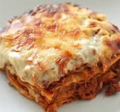

INGREDIENTI
PER LA SFOGLIA:
- 3 uova
- 350-400 g di farina 00
- 400 g di spinaci già puliti e lavati
PER IL RAGÙ:
-
150 g di pancetta tesa
- 700 g di macinato misto (lombo di maiale e muscolo di manzo)
- 90 g di burro
- ½ bicchiere di vino bianco secco
- 300 g di passata di pomodoro
- 1 sedano
- 1 carota
- 1 cipolla
- 2 cucchiai di concentrato di pomodoro
- sale grosso
- pepe
PER BESCIAMELLA:
- 1 dose e mezzo di besciamella
